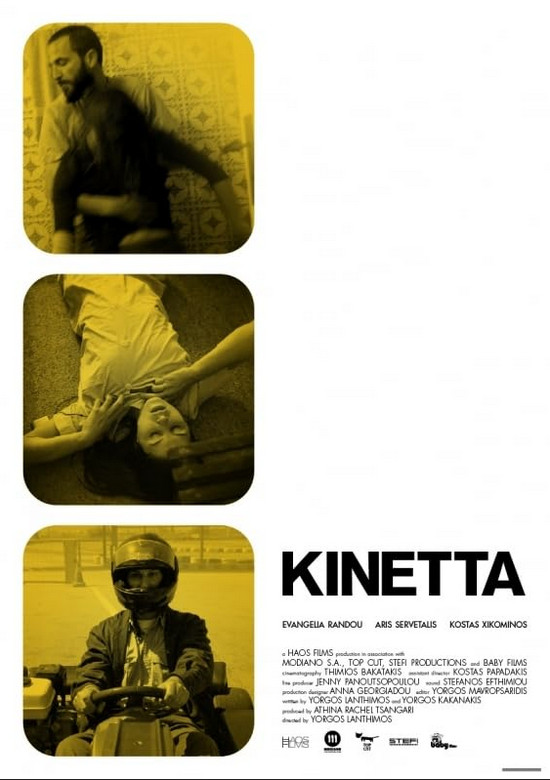

Yorgos Lanthimos
2005
95 minutes
This is essentially Yorgos Lanthimos' first film. It's a strange one and it's going to be hard to sit through even though it's only 95 minutes. It sounds better in theory than in practice, though it has its moments. The central theme is that three apparent strangers--a cop, a photographer, and a hotel maid--keep getting together to recreate murder scenes in a seemingly ritualistic manner for unexplained reasons.
You're not sure how to feel about this one. You chalk it up to probably being a filmmaker making a film about how it feels to make a film, in some abstract manner--the acting, the directing, and the cinematography. Each of the characters seems to be taking on one of those roles in actively creating the scenes and then observing others and each other. It's not a process you know or care about enough to have a strong reaction to.
You know that some serial killers, such as BTK, did the same sort of re-enactments of their crimes. BTK in particular would wear masks and women's clothing and bind himself and act out the horror that his victims went through. This seems to you like a good reminder to be a bit suspicious of people who are eager to relive and take on the role of a victim repeatedly, whether in fantasy or reality. All too many of them have a pretty good mental model of exactly good it would feel to turn the tables and be on the other end of the whip.
Time to choose something different: